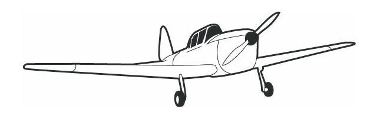

Under en flyrejse kan dine ben hæve og føles spændte, når [ ] sidder stille i mere end 3-4 timer. Bevæg dig derfor så meget som muligt.
Din hud kan også blive mere tør under flyrejsen. Medbring derfor [ ] på længere rejser.
Der kan også være andre [ ] forbundet med flyrejsen. Mange får således propper og eventuelt smerter i ørerne. Her kan det hjælpe at synke eller gabe.
